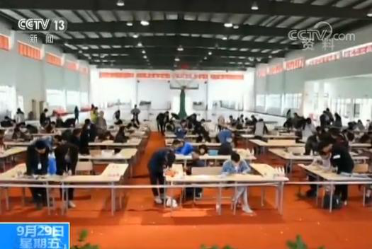

央视网消息：昨天（28日），教育部在例行新闻发布会上，首次以“大数据看变化”为主题，用数据解读5年来的教育新变化，晒了一份“教育清单”。

接受过学前教育比例达98.4%
据介绍，2016年全国幼儿园达到24万所，比2012年增加了5.9万所，目前在园幼儿人数达到了4413.9万人，小学新生中接受过学前教育的比例达98.4%。而对于当前社会呼吁比较高的入园难，入园贵的问题，教育部基础教育司司长也进行了解答。
教育部基础教育司司长 吕玉刚：
一是二孩政策的实施必然造成带来我们需要入园的孩子增多。二是城乡分布问题。随着城镇化的推进，学龄前的儿童入园，在一些地方也出现了入园难的问题、资源紧缺的问题。为了解决这些问题，今年教育部会同有关部门又继续部署实施了第三期的学前教育行动计划，明确提出到2020年全国学前教育三年毛入学率达到85%，也就是从去年的77.4%提高到85%，其中普惠性的幼儿园的孩子要达到80%。
以县为单位做建设幼儿园布局规划
同时，还要充分考虑人口变化趋势和城镇化的进程，做好新人口的测算，以县为单位，做出幼儿园建设的布局规划。
教育部基础教育司司长 吕玉刚：
要求每个乡镇都要至少建一所示范性的公办园。要积极扶持普惠性民办园，加强城镇小区配套幼儿园的建设和管理，农村每个乡镇至少办一所公办园。大村要独立建园，小村要联合办园，建立县乡村三级的学前教育网络。
高中教育：2020年毛入学率达90%
基础教育一直是老百姓关注的热点，而在基础教育阶段，高中教育在人们印象中，要么是围绕着高考指挥棒转，要么就是有些孩子选择其他途径，那么下一步我国普通高中将如何发展呢？
教育部基础教育司司长 吕玉刚：
通过新高考改革，我们清楚地看到，对高中阶段的课程结构、教学组织、条件保障等方面都提出了新的要求。下一步，把中西部贫困地区、民族地区、边远地区、革命老区作为重点，加大支持力度，扩大教育资源，确保到2020年，全国以及各省高中阶段毛入学率都达到90%以上。这个90%不是全国的平均数，是各个省都要达到，无一例外。
除此之外，为适应新高考改革，下一步将研究制定深化普通高中教育教学改革的指导意见，并深化普通高中课程和教学改革，创新育人方式和教学管理机制。
高等教育在学总规模位居世界第一
昨天（28日），教育部在例行新闻发布会上公布，当前我国高等教育在学总规模达到3699万人，占世界高等教育总规模的五分之一，位居世界第一。
高等教育正向普及化阶段迈进
据介绍，目前我国普通高校招生规模已经达到748万，毕业生规模突破700万，高等教育毛入学率从30%增长到42.7%，标志着我国正在快速迈向高等教育普及化。
教育部高等教育司司长 吴岩：
我们将实施“六卓越、一拔尖”计划2.0版，升级版，更加强调高等教育为经济社会发展、特别是区域经济社会发展的贡献力、支撑度、引领力，这些方面来说我们要做很多工作。
中西部获得100亿元中央财政支持
据吴岩介绍，目前已实施了“一省一校”高水平大学建设项目，共有14所高校获得56亿元的中央财政支持，同时还实施了中西部高校基础能力建设工程，共有24个中西部省份的100所高校获得100亿元中央财政支持。
教育经费GDP占比连续五年超4%
据初步统计，2016年国家财政性教育经费已达到3.14万亿元，首次突破3万亿元，占GDP比例连续五年保持在4%以上。
教育经费五年累计投入13.5万亿元
据介绍，2012-2016年，国家财政性教育经费五年累计投入13.5万亿元，超过1952-2011年60年累计投入之和，是新中国建国以来财政教育投入最多的五年。
教育部财务司副司长 赵建军：
从财政性教育经费支出用途来看，有三个“一半以上”，充分体现了“保基本、守底线、补短板、促公平、提质量”的原则。一是从各级教育的分布来看，一半以上用于义务教育。二是从地区分布来看，一半以上用于中西部地区。三是从支出方向看，一半以上用于教师工资和学生资助。
进一步健全教育经费管理制度
此外，赵建军表示，在加强和规范经费管理方面，要进一步健全教育经费管理制度，加强绩效管理，强化审计监督、财政监督检查，确保经费使用规范安全，提高经费使用效益，更好地服务保障教育改革发展。
 教育大数据应用技术国家工程实验室正式启动
教育大数据应用技术国家工程实验室正式启动
 陕西省教育大数据建设专题培训会召开
高校大数据应用研讨会在京召开
陕西省教育大数据建设专题培训会召开
高校大数据应用研讨会在京召开
 Round table on the subject “The use of Big Data in education”（ Turan University）
Round table on the subject “The use of Big Data in education”（ Turan University）